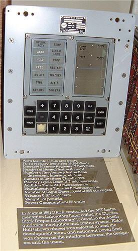
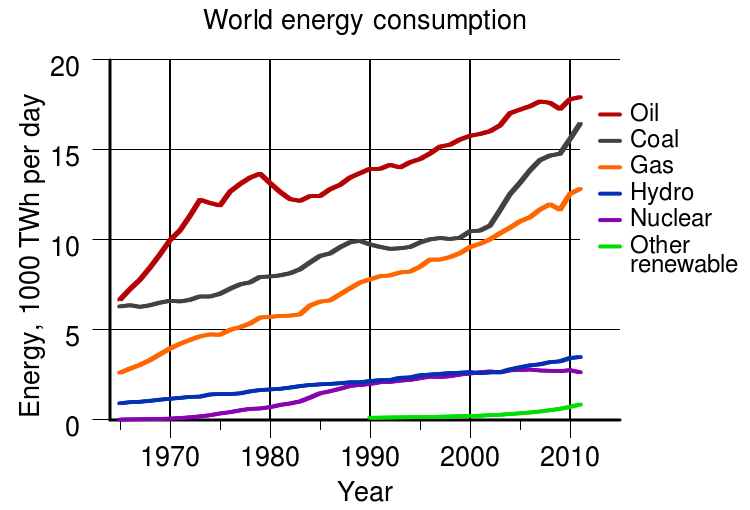
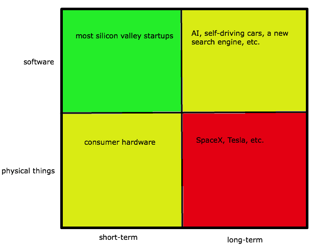

There’s a lot of debate about whether or not the pace of innovation has slowed, and if so, what that means. After some particularly brutal pitches that felt like Saturday Night Live parodies of startups, I feel compelled to weigh in. This question cannot be answered with a yes or a no; innovation has slowed dramatically in some areas and gone faster than most people would have thought possible in others. It’s interesting to ponder why.
We were once great at innovating in the physical world. Sometimes I stand in Manhattan and think about how amazing it is that everything around me was dug out of the ground, and made with things that were dug out of the ground. Making an iPhone starts with digging silicon out of the ground, putting some impurities in it and making it into a chip. Then robots, also made with metal mined from the ground, assemble all the chips plus more stuff dug out from the ground to make a phone.
But recently, software (and mostly Internet software) has been the focus of innovation, and its importance is probably still underestimated—there are compounding effects to how it’s changing the world that we’re only now beginning to see.
It’s amazing how fast it’s happened.
In 1990, the Internet was 21 years old and only 2.8 million people had access to it. (HTML/HTTP wouldn’t be released for another year.) There are now over 2.5 billion Internet users—a nearly 100,000% increase in 23 years. Also in 1990, there were 12.4 million mobile phone subscribers. These were very basic phones, of course—even in 1999, there was no such thing as smartphone. In 2012, the number of global smartphone users crossed 1 billion, and the number of mobile phone subscribers is much greater. There are now approximately as many mobile subscriptions (not unique subscribers) as people in the world!
But innovation in the physical world (besides phones and computers) over the same time period has been less impressive. We went from the first flight with a piston engine to the first flight with a jet engine in about 30 years; 30 years after that we landed on the moon. Since 1939, jet engines have certainly improved incrementally, but I’m still waiting to travel by ramjet (which incidentally was patented in 1908). When we made it to the moon in 1969—guided by computers with 64KB of memory and a clock speed of 0.043MHz, similar to a modern high-end toothbrush—people thought the rest of the solar system and the stars were not far off. We are still waiting.

In the 1960s, oil was our primary energy source, followed by coal, gas, hydro, nuclear, and a tiny fraction of renewables. Today, the order is…oil, coal, gas, hydro, nuclear, and a tiny fraction of renewables.

Instead of way better ways to generate energy, we talk about reducing usage. I’m all for conservation, but there’s still something defeatist about it—weren’t we supposed to be generating huge amounts of cheap, clean energy by now?
There are countless other examples of apparent lack of breakthrough progress in materials science, biotech, food, healthcare, etc. I can’t order food from a Replicator. In some ways we’ve even backtracked—I have not been able to travel faster than the speed of sound since I was a kid. (To be fair, there may be great innovation happening now that is difficult to see. Innovation often looks like the creation of idle toys while it’s happening, and only in retrospect can we see how important developments really are.)
There’s another important consideration in addition to software/physical—short-term/long-term (or incremental/radically new). We’ve seen much more progress on things that can be incrementally improved in a short time frame than things that require open-ended, new development. This is true for both software and physical things. For example, there are a huge number of people working on making websites really nice-looking and easy-to-use—and they’re doing a fine job—but not very many people working on artificial intelligence. There are a decent number of people working on more efficient jet engines, but not very many civilians working on replacing the jet engine with something new.
Incremental progress is good—it compounds, and it’s a way to develop great things eventually. It works a much higher percentage of the time than step change innovation. It’s certainly the model I’ve observed help many startups reach great success. The iPhone, which I think is the most important innovation of 2005-2010, came about at least somewhat via compounding incremental progress. But there were a few critical discontinuities, and Apple took as much time as they needed to figure those out. They also had the luxury of one guy saying that they were going to do these crazy things like ship a phone with no keyboard running a real OS and require everyone to buy a data plan.
Part of the reason Internet businesses have been so successful is that it’s easy to iterate quickly with incremental changes. This makes them appealing businesses. But there are some things incremental refinement will never get us.
On the software side, it’s relatively easy right now to raise money for a new website or mobile app that brings an existing, offline industry online. In most cases, this is a real, but small, step forward. It’s harder to raise money for software companies working on uncertain, long-term, high-reward projects (like AI). When it comes to hardware, it’s medium hard to raise money for a consumer hardware company, even with a well-understood plan and a short timeframe to ship [0]. It’s very difficult to raise money for a new car company, a new rocket company, a new energy company, etc.
Right now in Silicon Valley, most investors are more interested in your growth graph than your long-term plan—i.e., more interested in the past than the future. Some possible explanations for this are risk aversion and intellectual laziness. (Actually, it’s a little better than that—compounding growth is an extremely powerful force, and if investors believe growth will keep going at the same rate, then they can be making a very wise decision.) This focus makes it hard for companies to raise money if they’re doing things that won’t have a growth graph of any sort for years.
Looking at the past and projecting it forward is good for public market investors, who probably should judge a company on past performance. But venture investors are supposed to be taking risks on unproven technology and ideas. Perversely, in the current world, public market investors love to speculate about the future when pricing a stock (sometimes getting themselves badly burned, e.g. the Internet bubble) while most venture investors—the occasional $40+MM A round aside—seem to be leaning in Benjamin Graham’s direction [1].
A two-by-two matrix of progress in innovation (and ease of attracting investment) with software/physical on one axis and short-term/long-term on the other axis looks like this:

Green is good, yellow is ok, and red is bad.
I don’t think it’s totally correct to say that innovation has slowed—what’s happened is that innovative energy has mostly been directed to short-timeframe opportunities in software. This is at least mostly rational—honestly, over the last few decades there have just been way more successes in the computer industry than in biotech, cleantech, etc. The virtual world is far, far less regulated than the physical world, which makes it a less risky place to start a new business. (Although a very interesting side note is that many of the most successful Internet businesses have been ones that connect the virtual to the physical world in some way.) And many founders, if you catch them after a few drinks, will often say that they want to get rich in a small handful of years, and timeframes on the Internet are much faster. Many investors are even worse on this point.
And most importantly, computers are awesome. Again, it’s not clear to me that we’re worse off focusing our collective energy here, although I do think we should do more on the long-term opportunities. If the Internet is the most important development of the last 30 years, it makes sense to have most of our best people working on it [2].
And now we get to the fundamental issue with innovation today. People—founders, employees, and investors—are looking for low-cost (and virtual is lower cost than physical), short-term opportunities. But what causes the low-cost, short-timeframe preference?
For one, there is some deeply human appeal to getting rich quickly, which has probably been around forever. Investing in software businesses has worked (sometimes), and will probably continue to do so for some time. Software has been a great place—that did not exist during the physical innovation boom—to direct investment capital.
We haven’t had a really capital-intensive war in a long time, and while that’s obviously great, I am always astonished when I read about how much real innovation has involved the military or national security—it’s hard to get effectively unlimited budgets and focus any other way. The Internet itself came from the military.
Regulatory uncertainty for non-Internet businesses is another issue, which can at least be improved—although it will be challenging to ever match the freedom of the Internet.
Perhaps most importantly of all, we can use software to drive innovation in the non-software world by doing as much as possible in software. We should focus on the intersection of software and everything else—for example, programs that let us do design in software can bring down cost and cycle time. I believe that short sub-project times are almost always a win, and many companies in the physical realm seem to have long timelines without a lot of intermediate milestones.
Another thing we can do is to better reward truly long-term investing. Right now, there’s a focus on the extreme short-term—many investors care mostly about what earnings are going to be next quarter, and the rise in volume of weekly options has been impressive. Unfortunately, what Wall Street thinks trickles down the pyramid to venture capitalists and even angel investors, so we see a shortening of time horizons everywhere. This is probably difficult to stop entirely, but I’m sure that a very favorable tax policy on multi-year holdings (and an even less favorable one for short-term holdings) would help.
Venture funds commonly have a ten year life; lengthening that to fifteen or twenty might help. I’d also like to see companies move to five- or six-year vesting for founders and employees.
Or maybe we need a new funding model for radical innovation. Investment capital will look for the best risk-adjusted return; right now, lots of investors believe Internet companies are it. As mentioned above, many of the things we consider to be breakthrough innovations with physical things happened before computers, when there was not such a readily available and attractive investment platform. Investors are often making rational decisions by choosing a shorter-timeframe opportunity that requires less capital. So maybe the government needs to spend more money on discovery (although right now, it’s decreasing funding for things like the National Labs and the NIH), and maybe there’s a philanthropic model that makes sense.
And there are probably a lot of other things we should be doing too.
I am a proud child of the computer age. I can’t imagine life without them, and I’m happy lots of people are working to make them better. Although it makes sense that most innovation is happening incrementally on the Internet, it would be a shame for us as a species to lose the drive for the sort of discontinuous innovations that got us the Internet in the first place. I can’t go live in a computer yet, so I’d also like the real world to continue to get better.
Thanks to Jack Altman, Patrick Collison, Kevin Lawler, Eric Migicovsky, Geoff Ralston, and Nick Sivo for reading drafts of this.
[0] ]It used to be really hard, but preorders have made it easier. For example, Pebble was unable to raise money from investors until they no longer needed it—they collected more than $10MM in effective preorders on Kickstarter. But until then, investors dismissed them, saying “we don’t like hardware.”
[1] No disrespect to Color’s investors—they believed strongly in something radical, without a growth graph, and took a big capital risk. I’d be happy to see more of that, but maybe for different sorts of companies.
[2] Talk about STEM—the study of science, technology, engineering, and mathematics—is mostly BS. Learning to hack Rails in ten weeks is regrettably a good career move as of June 20th, 2013. Learning physics over ten years has a much worse economic payoff. In today’s world, we have programming, and we have everything else. At least in terms of a plan to become qualified for better jobs, STEM should be renamed CS.
As a side note to the side note, I don’t blame finance for stealing our good engineers. The failure is that non-CS engineering career paths don’t look very attractive right now.